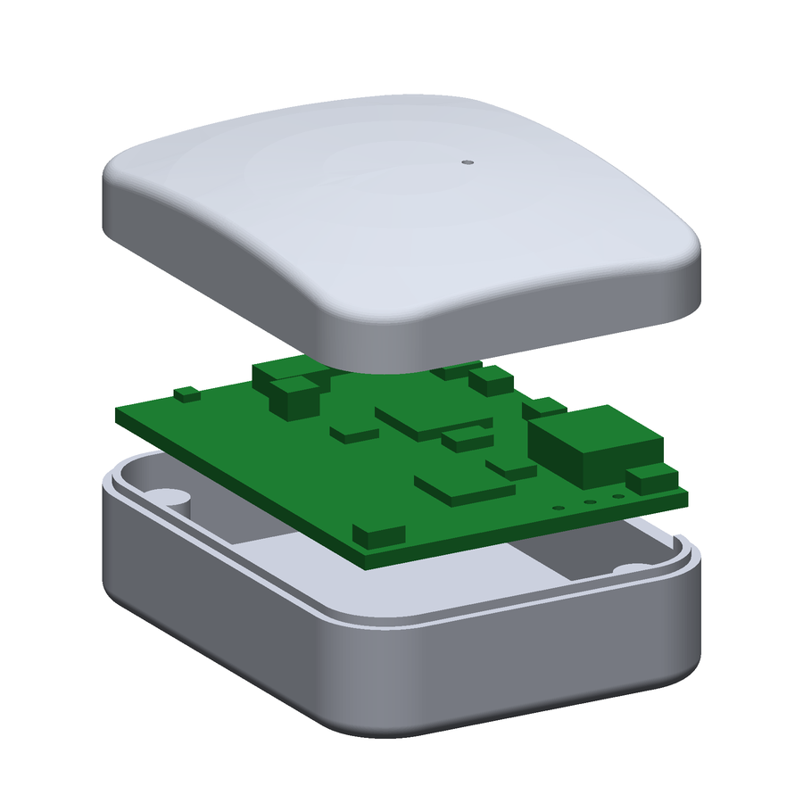
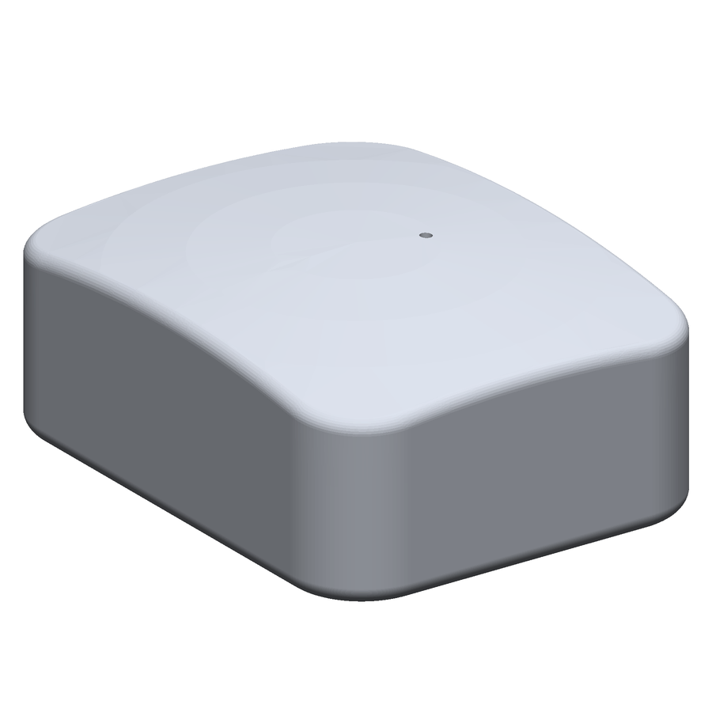
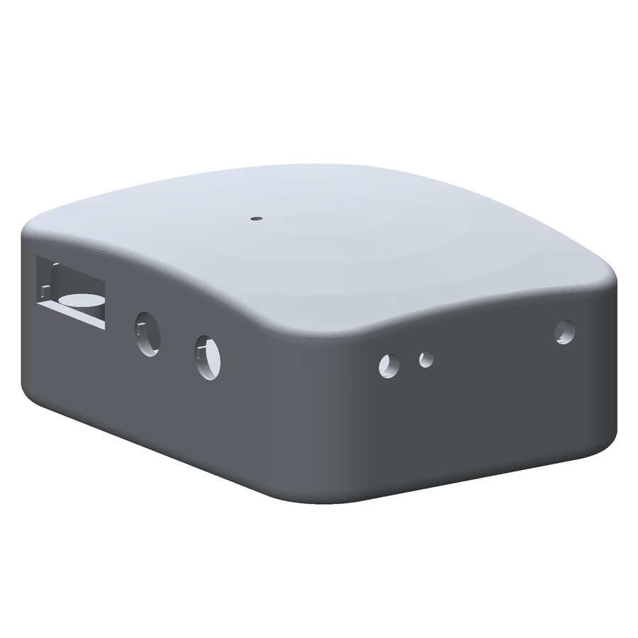
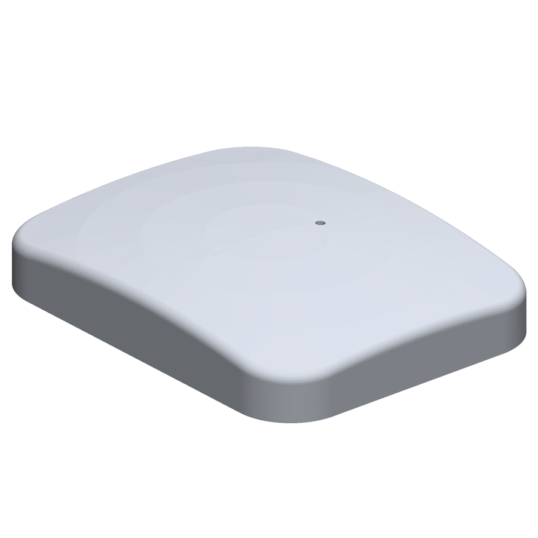
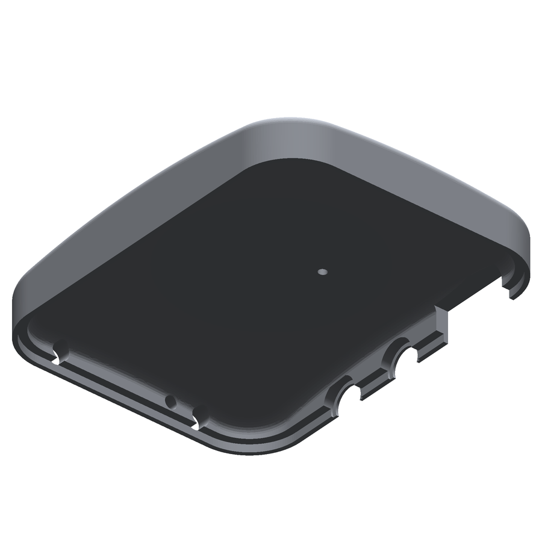
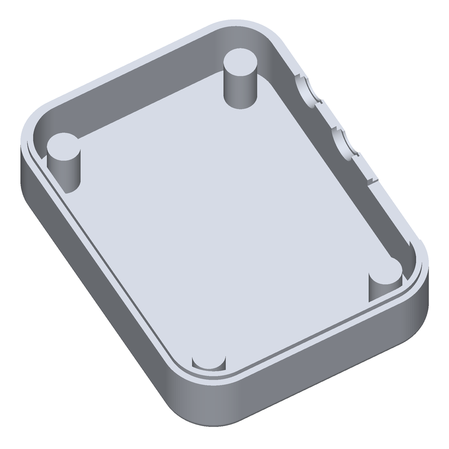
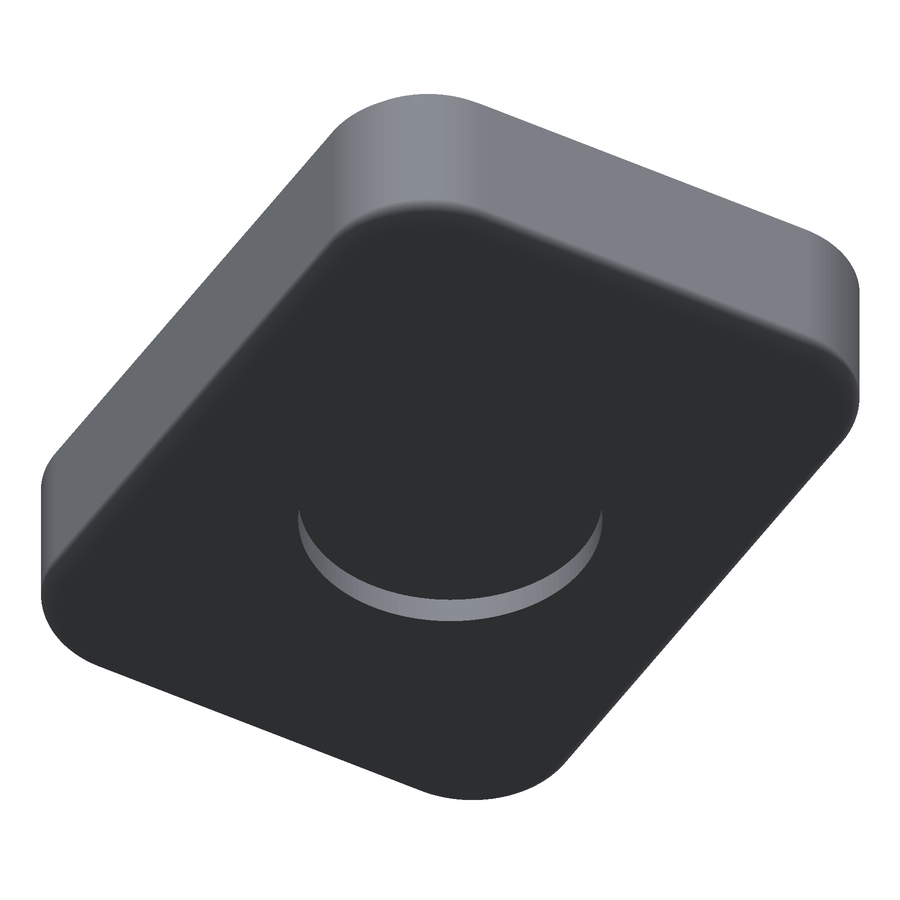
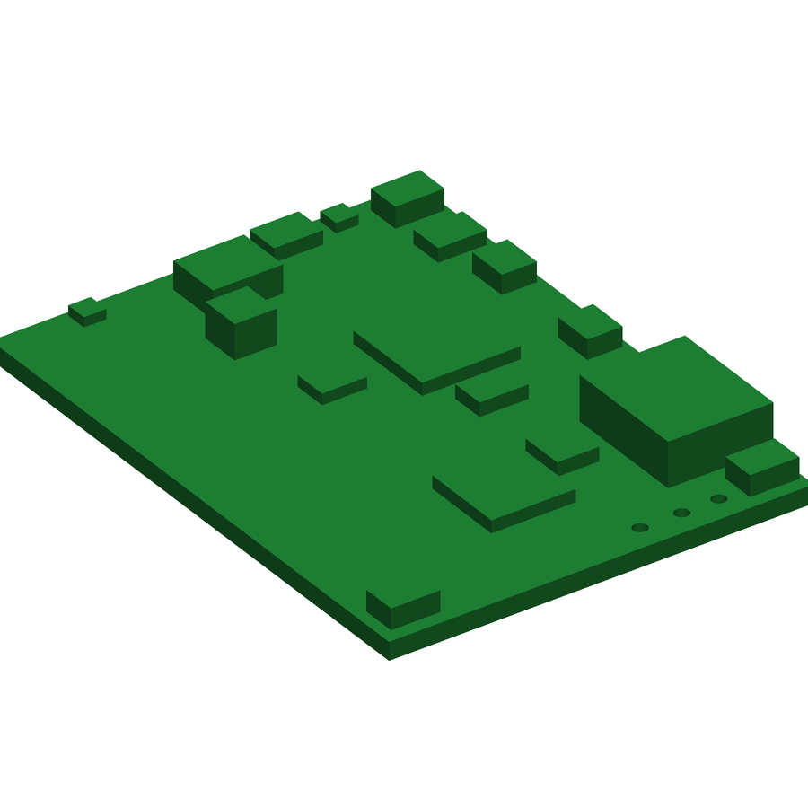

Wearable Voice-Recorder Enclosure
3D-printed two-part case for a 6-layer wearable recorder PCB, taken from CAD through printed prototypes across two board generations.
The fit problem: First prints didn't seat. I measured the cavity, found the clearance was under-allocated for FDM shrinkage, and re-budgeted it from 0.4 to 1.2 mm per side. The parts now close.
Details
- Reverse-engineered component placement from Gerber, Excellon and pick-and-place files
- Designed for manufacturability: parting line oriented for layer-adhesion strength, draft, uniform 1.5 mm walls
- Integrated an FR-4 board, NdFeB magnet, Li battery and USB-C port
- Class-A surfacing for a premium finish
Board 30.18 × 40.39 × 1.3 mm, 6 layers · Case ~35 × 46 × 19.5 mm · Wall 1.5 mm